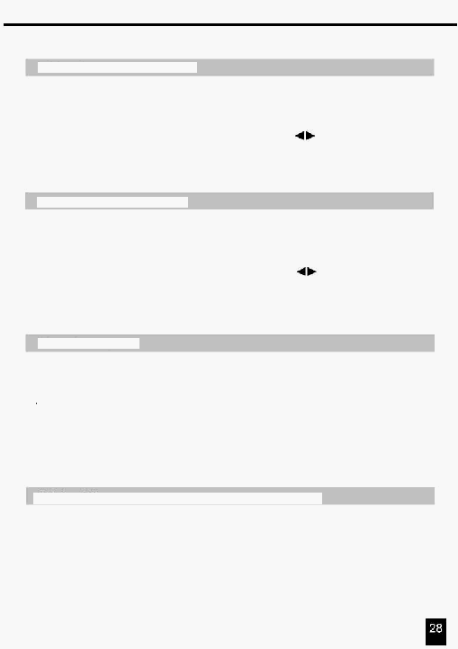

4. Резюме Головних Функцій
Одиничний режим (Single Mode)
1.
Всі програми будуть запускатися послідовному порядку відповідно до номера програми.
2. На цифровому дисплеї буде відображатися номер виконуваної програми.
3. Всі програми будуть управлятися повзунком Speed.
4. Натисніть кнопку MODE SELECT і виберіть "CHNS
SCENES".
5. Натисніть кнопку PARK для вибору режиму SINGLE CHASE. При цьому засвітиться червоний
індикатор.
Режим змішування (Mix Mode)
1. Всі програми виконуються синхронно.
2. Всі програми управляються повзунком SPEED, або швидкість будь-якої програми встановлюється
індивідуально. (Дивися Установка Швидкості).
3. Натисніть кнопку MODE SELECT і виберіть "CHNS
SCENES".
4. Натисніть кнопку PARK для вибору режиму мікшування MIX CHASE. При цьому засвітиться
жовтий індикатор.
Цифровий дисплей
1.
Функція затемнення (Blind) тимчасово виключає виходи каналів і дає можливість управляти ними
вручну.
2. Натисніть й утримуйте кнопку Blind і натисніть відповідну кнопку Flash для тимчасового відключення
виходу.
3. Для повернення в нормальний режим роботи натисніть й утримуйте кнопку Home і натисніть
відповідну кнопку Flash виходу, що Ви бажаєте повернути в нормальний режим роботи.
1
Трицифровий дисплей використовується для відображення у відсотках або в абсолютних
значеннях інтерфейсу DMX.
2
Для зміни між відсотками й абсолютними значеннями:
Натисніть й утримуйте кнопку Shift, при цьому натисніть кнопку 0% або 255 для перемикання між
відсотками й абсолютними величинами.
3
Якщо на цифровому дисплеї відображається, наприклад, число “076”, то у відсотках це - 76%,
а в абсолютних величинах це буде число - 76
Затемнення (Blind) і повернення ( Home)